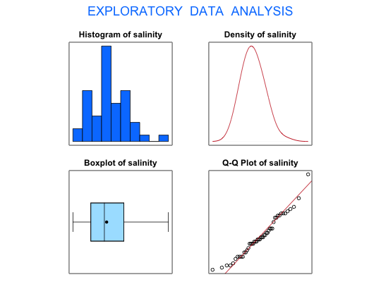

Surface-water salinity measurements were taken in a bottom-sampling project
in Whitewater Bay, Florida. These data are stored in the data frame
Salinity.
A data frame with 48 observations on the following variable:
Davis, J. (1986) Statistics and Data Analysis in Geology. John Wiley, New York.
Ugarte, M. D., Militino, A. F., and Arnholt, A. T. (2008) Probability and Statistics with R. Chapman & Hall/CRC.
#> [1] "salinity" #>#> Size (n) Missing Minimum 1st Qu Mean Median TrMean 3rd Qu #> 48.000 0.000 34.000 42.250 49.542 48.500 49.182 57.500 #> Max. Stdev. Var. SE Mean I.Q.R. Range Kurtosis Skewness #> 78.000 9.269 85.913 1.338 15.250 44.000 0.212 0.550 #> SW p-val #> 0.168 #>